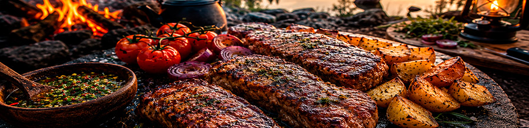
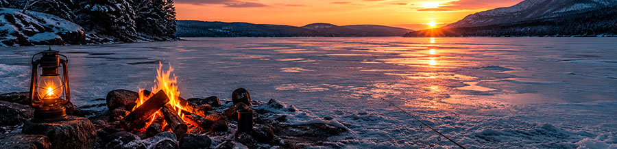
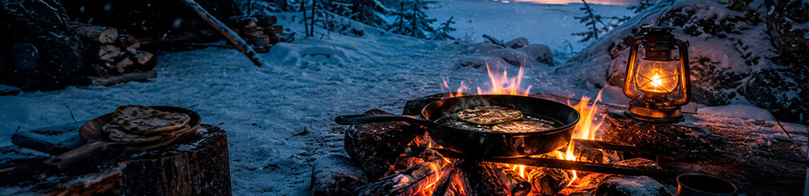
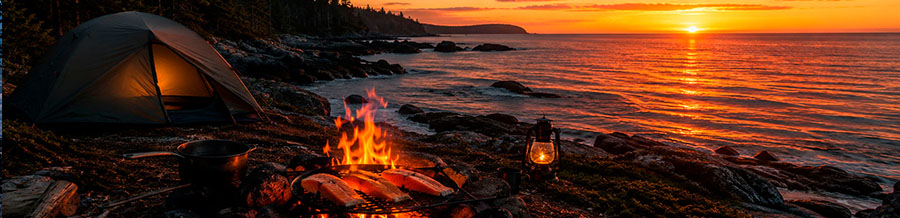
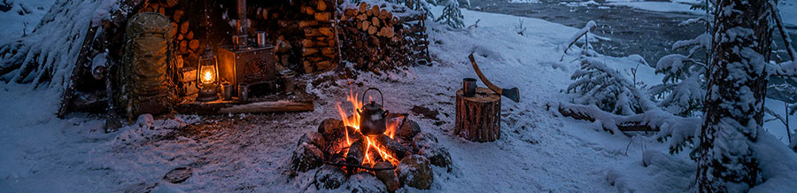
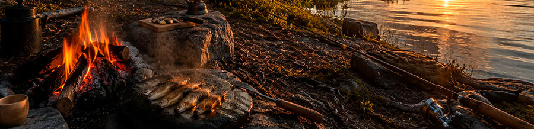
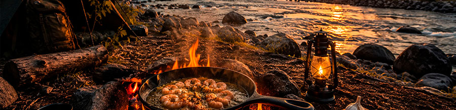
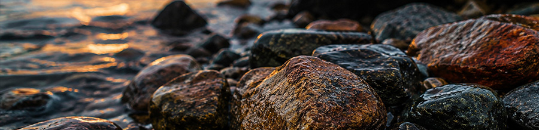
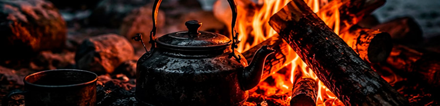
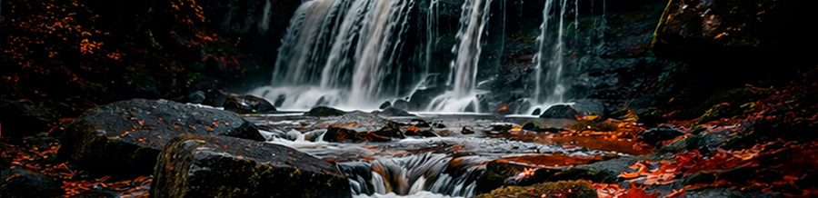

Welcome to the ASF Outdoors Blog, where we share real outdoor adventures, solo camping experiences, bushcraft skills, fishing trips and campfire cooking. From snowy forests and frozen lakes to quiet rivers and coastal campsites, every article documents life in the wilderness and the simple pleasures of spending time outdoors.
Whether you enjoy winter camping, catch and cook fishing adventures, outdoor cooking recipes or peaceful ASMR-style camping experiences, you'll find inspiration and practical ideas for your next adventure.

Enjoy a relaxing solo camping adventure featuring juicy campfire BBQ, lakeside camping and soothing outdoor ASMR sounds.

Experience a winter fishing adventure on a frozen lake and enjoy fresh fish cooked over a crackling campfire in the wilderness.

A peaceful solo winter bushcraft adventure featuring campfire cooking, snowy landscapes and homemade pancakes cooked outdoors.

Enjoy a relaxing coastal camping experience while preparing fresh salmon over an open campfire beside the ocean.

Explore the beauty of winter wilderness, build a campfire and experience the rewards of solo bushcraft in snowy conditions.

Catch fresh perch and cook it on a hot stone over a campfire during a peaceful forest camping adventure.

Delicious garlic butter shrimp prepared beside a flowing river while enjoying the simple pleasures of campfire cooking.

Relax with 60 minutes of peaceful stream sounds and natural ASMR. Perfect for sleep, meditation, stress relief, studying and creating a calm atmosphere.

Relax beside a crackling campfire in a snowy forest and enjoy soothing ASMR fire sounds, winter ambience and peaceful wilderness atmosphere.

Experience one hour of relaxing waterfall sounds from the largest plain waterfall in Europe. Perfect for sleep, meditation, studying and stress relief.